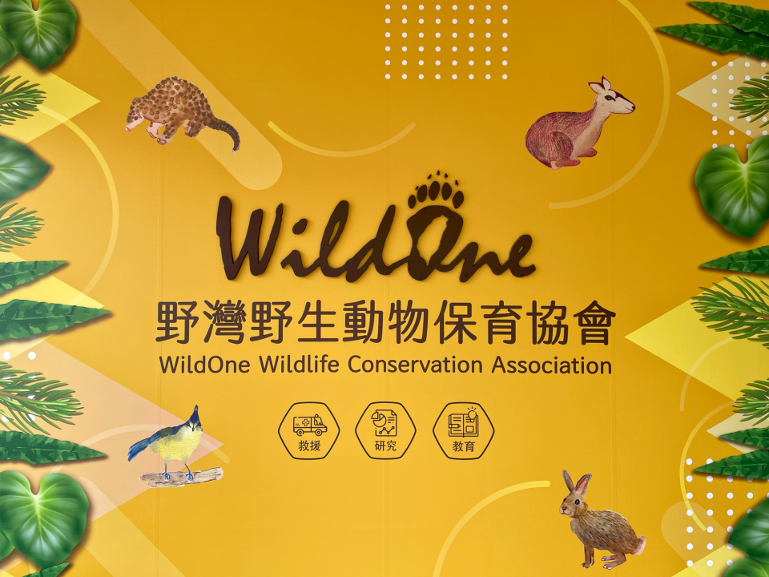

Featured Organizations



WildOne
They help raise awareness and understanding of Taiwan's environmental issues, while also contributing to the fields of animal research and medical care.
Taipei Orphan Welfare Foundation
They support children who lose their parents or caregivers and help families faced with a variety of difficulties
Christian Salvation Service
Committed to rescuing disadvantaged women, children and families in Taiwan